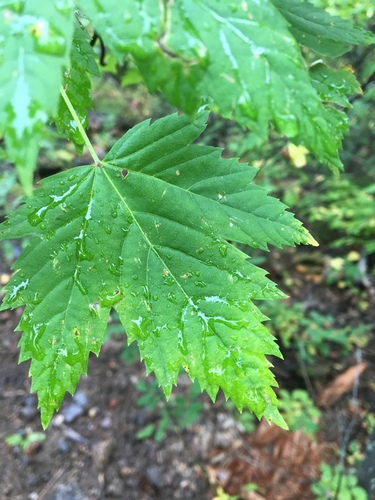

Plants of the Riparian
Where the species has been recorded. Occurrence counts and a confidence band travel with every region on the species page.
80 plants
Alder-leaved BuckthornEndotropis alnifolia Alex Abair, some rights reserved (CC BY), uploaded by Alex Abair") American BrooklimeVeronica americana
American BrooklimeVeronica americana Rob Foster, some rights reserved (CC BY), uploaded by Rob Foster") Arum-leaved ArrowheadSagittaria cuneata
Arum-leaved ArrowheadSagittaria cuneata Awned SedgeCarex atherodes
Awned SedgeCarex atherodes naturalist charlie, some rights reserved (CC BY), uploaded by naturalist charlie") Basket WillowSalix petiolarisBebb's SedgeCarex bebbiiBebb's WillowSalix bebbiana
Basket WillowSalix petiolarisBebb's SedgeCarex bebbiiBebb's WillowSalix bebbiana Matt Lavin, some rights reserved (CC BY)") Bluejoint Reed GrassCalamagrostis canadensis
Bluejoint Reed GrassCalamagrostis canadensis Laura Gaudette, some rights reserved (CC BY), uploaded by Laura Gaudette") Bracted HoneysuckleLonicera involucrataBroad-leaved Water-plantainAlisma trivialeCanada Rice GrassPiptatherum canadenseCommon Scouring-rushEquisetum hyemale
Bracted HoneysuckleLonicera involucrataBroad-leaved Water-plantainAlisma trivialeCanada Rice GrassPiptatherum canadenseCommon Scouring-rushEquisetum hyemale aarongunnar, some rights reserved (CC BY), uploaded by aarongunnar") Common Tall Manna GrassGlyceria grandis
Common Tall Manna GrassGlyceria grandis er-birds, some rights reserved (CC BY), uploaded by er-birds") Fringed LoosestrifeLysimachia ciliataGiant Bur-reedSparganium eurycarpum
Fringed LoosestrifeLysimachia ciliataGiant Bur-reedSparganium eurycarpum Matt Berger, some rights reserved (CC BY), uploaded by Matt Berger") Golden SedgeCarex aureaGreater Northern AsterCanadanthus modestusGreen AlderAlnus alnobetula
Golden SedgeCarex aureaGreater Northern AsterCanadanthus modestusGreen AlderAlnus alnobetula Tom Norton, some rights reserved (CC BY), uploaded by Tom Norton") Highbush CranberryViburnum opulusKnotted RushJuncus nodosus
Highbush CranberryViburnum opulusKnotted RushJuncus nodosus aarongunnar, some rights reserved (CC BY), uploaded by aarongunnar") Lakeshore SedgeCarex lacustris
Lakeshore SedgeCarex lacustris Andrey Zharkikh, some rights reserved (CC BY)") Leafy AsterSymphyotrichum foliaceum
Leafy AsterSymphyotrichum foliaceum Ivar Leidus, some rights reserved (CC BY-SA)") Marsh CinquefoilComarum palustre
Marsh CinquefoilComarum palustre Frank Mayfield, some rights reserved (CC BY-SA)") Marsh Hedge NettleStachys pilosa
Marsh Hedge NettleStachys pilosa Patrick Hacker, some rights reserved (CC BY), uploaded by Patrick Hacker") Marsh Hedge Nettle (Marsh Woundwort)Stachys palustris
Marsh Hedge Nettle (Marsh Woundwort)Stachys palustris Benoit Renaud, some rights reserved (CC BY), uploaded by Benoit Renaud") Marsh SkullcapScutellaria galericulataMarsh VioletViola palustrisMountain HollyhockIliamna rivularis
Marsh SkullcapScutellaria galericulataMarsh VioletViola palustrisMountain HollyhockIliamna rivularis Stan Shebs, some rights reserved (CC BY-SA)") Narrow-leaf WillowSalix exiguaNeedle Spike-rushEleocharis acicularis
Narrow-leaf WillowSalix exiguaNeedle Spike-rushEleocharis acicularis Tom Norton, some rights reserved (CC BY), uploaded by Tom Norton") Ostrich FernMatteuccia struthiopteris
Ostrich FernMatteuccia struthiopteris Mary Krieger, some rights reserved (CC BY), uploaded by Mary Krieger") Palmate-leaved ColtsfootPetasites frigidus
Palmate-leaved ColtsfootPetasites frigidus Bob Walker, some rights reserved (CC BY), uploaded by Bob Walker") Pink Monkey FlowerErythranthe lewisii
Pink Monkey FlowerErythranthe lewisii Alan Rockefeller, some rights reserved (CC BY), uploaded by Alan Rockefeller") Pink SpireaSpiraea douglasii
Pink SpireaSpiraea douglasii aarongunnar, some rights reserved (CC BY), uploaded by aarongunnar") Porcupine SedgeCarex hystericinaPrairie Cord GrassSpartina pectinata
Porcupine SedgeCarex hystericinaPrairie Cord GrassSpartina pectinata Prairie Wedge GrassSphenopholis obtusata
Prairie Wedge GrassSphenopholis obtusata Георгий Виноградов (Georgy Vinogradov), some rights reserved (CC BY), uploaded by Георгий Виноградов (Georgy Vinogradov)") Purple Avens (Water Avens)Geum rivale
Purple Avens (Water Avens)Geum rivale Douglas Goldman, some rights reserved (CC BY-SA), uploaded by Douglas Goldman") Purple-stemmed Tall Aster (Swamp Aster)Symphyotrichum puniceum
Purple-stemmed Tall Aster (Swamp Aster)Symphyotrichum puniceum bobkennedy, some rights reserved (CC BY-SA), uploaded by bobkennedy") Pussy WillowSalix discolor
Pussy WillowSalix discolor giantcicada, some rights reserved (CC BY), uploaded by giantcicada") Red Osier DogwoodCornus sericea
Red Osier DogwoodCornus sericea Benoit NABHOLZ, some rights reserved (CC BY-SA), uploaded by Benoit NABHOLZ") River BeautyChamaenerion latifolium
River BeautyChamaenerion latifolium Jeremy Atherton, some rights reserved (CC BY), uploaded by Jeremy Atherton") River BulrushBolboschoenus fluviatilis
River BulrushBolboschoenus fluviatilis Harvey Barrison, some rights reserved (CC BY-SA)") Sandbar WillowSalix interiorSartwell's SedgeCarex sartwelliiShort-capsuled WillowSalix brachycarpa
Sandbar WillowSalix interiorSartwell's SedgeCarex sartwelliiShort-capsuled WillowSalix brachycarpa Matt Lavin, some rights reserved (CC BY-SA)") Silver SagebrushArtemisia canaSlender NettleUrtica gracilis
Silver SagebrushArtemisia canaSlender NettleUrtica gracilis Nolan Exe, some rights reserved (CC BY), uploaded by Nolan Exe") Slough GrassBeckmannia syzigachneSmooth Fleabane (Streamside Fleabane)Erigeron glabellus
Slough GrassBeckmannia syzigachneSmooth Fleabane (Streamside Fleabane)Erigeron glabellus Matt Lavin, some rights reserved (CC BY-SA)") Smooth Wild RyeElymus glaucusSneezeweedHelenium autumnale
Smooth Wild RyeElymus glaucusSneezeweedHelenium autumnale Square-stem MonkeyflowerMimulus ringensSweet Broom (Alpine Sweetvetch)Hedysarum alpinum
Square-stem MonkeyflowerMimulus ringensSweet Broom (Alpine Sweetvetch)Hedysarum alpinum aarongunnar, some rights reserved (CC BY), uploaded by aarongunnar") SweetgrassAnthoxanthum hirtum
SweetgrassAnthoxanthum hirtum Denali National Park and Preserve, some rights reserved (CC BY)") Tall Jacob's LadderPolemonium acutiflorum
Tall Jacob's LadderPolemonium acutiflorum 2007 Dianne Fristrom, some rights reserved (CC BY-SA)") Tall LarkspurDelphinium glaucum
Tall LarkspurDelphinium glaucum Connie Taylor, some rights reserved (CC BY), uploaded by Connie Taylor") Tall Lungwort (Blue Bells)Mertensia paniculata
Tall Lungwort (Blue Bells)Mertensia paniculata Mary Krieger, some rights reserved (CC BY), uploaded by Mary Krieger") Tall Meadow RueThalictrum dasycarpum
Tall Meadow RueThalictrum dasycarpum Hladac, some rights reserved (CC BY-SA)") Thinleaf AlderAlnus incana
Thinleaf AlderAlnus incana Douglas Goldman, some rights reserved (CC BY-SA), uploaded by Douglas Goldman") Three-square RushSchoenoplectus pungensTrailing RaspberryRubus pedatusTufted HairgrassDeschampsia caespitosa
Three-square RushSchoenoplectus pungensTrailing RaspberryRubus pedatusTufted HairgrassDeschampsia caespitosa Tufted Tall Manna GrassGlyceria elataTurned SedgeCarex retrorsa
Tufted Tall Manna GrassGlyceria elataTurned SedgeCarex retrorsa Юлия, some rights reserved (CC BY), uploaded by Юлия") Variegated HorsetailEquisetum variegatum
Variegated HorsetailEquisetum variegatum Jim Morefield, some rights reserved (CC BY)") Water BirchBetula occidentalisWater ParsnipSium suave
Water BirchBetula occidentalisWater ParsnipSium suave Kevin Krebs, some rights reserved (CC BY), uploaded by Kevin Krebs") Water SmartweedPersicaria amphibiaWestern Willow AsterSymphyotrichum hesperiumWild Black CurrantRibes americanum
Water SmartweedPersicaria amphibiaWestern Willow AsterSymphyotrichum hesperiumWild Black CurrantRibes americanum Michael J. Papay, some rights reserved (CC BY), uploaded by Michael J. Papay") Willow AsterSymphyotrichum lanceolatum
Willow AsterSymphyotrichum lanceolatum aarongunnar, some rights reserved (CC BY), uploaded by aarongunnar") Woolly SedgeCarex pellita
Woolly SedgeCarex pellita J Brew, some rights reserved (CC BY-SA), uploaded by J Brew") Yellow BeardtonguePenstemon confertus
Yellow BeardtonguePenstemon confertus Yellow Lady's SlipperCypripedium parviflorum
Yellow Lady's SlipperCypripedium parviflorum Matt Berger, some rights reserved (CC BY), uploaded by Matt Berger") Yellow Monkey FlowerErythranthe guttata
Yellow Monkey FlowerErythranthe guttata Jason Hollinger, some rights reserved (CC BY-SA)") Yellow Mountain AvensDryas drummondii
Yellow Mountain AvensDryas drummondii
American BrooklimeVeronica americanaArum-leaved ArrowheadSagittaria cuneataAwned SedgeCarex atherodesBasket WillowSalix petiolarisBebb's SedgeCarex bebbiiBebb's WillowSalix bebbianaBluejoint Reed GrassCalamagrostis canadensisBracted HoneysuckleLonicera involucrataBroad-leaved Water-plantainAlisma trivialeCanada Rice GrassPiptatherum canadenseCommon Scouring-rushEquisetum hyemaleCommon Tall Manna GrassGlyceria grandis
Douglas MapleAcer glabrumFalse DragonheadPhysostegia ledinghamiiFalse Dragonhead (Western Obedient Plant)Physostegia parvifloraFringed LoosestrifeLysimachia ciliataGiant Bur-reedSparganium eurycarpumGolden SedgeCarex aureaGreater Northern AsterCanadanthus modestusGreen AlderAlnus alnobetulaHighbush CranberryViburnum opulusKnotted RushJuncus nodosusLakeshore SedgeCarex lacustrisLeafy AsterSymphyotrichum foliaceumMarsh CinquefoilComarum palustreMarsh Hedge NettleStachys pilosaMarsh Hedge Nettle (Marsh Woundwort)Stachys palustrisMarsh SkullcapScutellaria galericulataMarsh VioletViola palustrisMountain HollyhockIliamna rivularisNarrow-leaf WillowSalix exiguaNeedle Spike-rushEleocharis acicularisOstrich FernMatteuccia struthiopterisPalmate-leaved ColtsfootPetasites frigidusPink Monkey FlowerErythranthe lewisiiPink SpireaSpiraea douglasiiPorcupine SedgeCarex hystericinaPrairie Cord GrassSpartina pectinataPrairie Wedge GrassSphenopholis obtusataPurple Avens (Water Avens)Geum rivalePurple-stemmed Tall Aster (Swamp Aster)Symphyotrichum puniceumPussy WillowSalix discolorRed Osier DogwoodCornus sericeaRiver BeautyChamaenerion latifoliumRiver BulrushBolboschoenus fluviatilisSandbar WillowSalix interiorSartwell's SedgeCarex sartwelliiShort-capsuled WillowSalix brachycarpaSilver SagebrushArtemisia canaSlender NettleUrtica gracilisSlough GrassBeckmannia syzigachneSmooth Fleabane (Streamside Fleabane)Erigeron glabellusSmooth Wild RyeElymus glaucusSneezeweedHelenium autumnaleSquare-stem MonkeyflowerMimulus ringensSweet Broom (Alpine Sweetvetch)Hedysarum alpinumSweetgrassAnthoxanthum hirtumTall Jacob's LadderPolemonium acutiflorumTall LarkspurDelphinium glaucumTall Lungwort (Blue Bells)Mertensia paniculataTall Meadow RueThalictrum dasycarpumThinleaf AlderAlnus incanaThree-square RushSchoenoplectus pungensTrailing RaspberryRubus pedatusTufted HairgrassDeschampsia caespitosaTufted Tall Manna GrassGlyceria elataTurned SedgeCarex retrorsaVariegated HorsetailEquisetum variegatumWater BirchBetula occidentalisWater ParsnipSium suaveWater SmartweedPersicaria amphibiaWestern Willow AsterSymphyotrichum hesperiumWild Black CurrantRibes americanumWillow AsterSymphyotrichum lanceolatumWoolly SedgeCarex pellitaYellow BeardtonguePenstemon confertusYellow Lady's SlipperCypripedium parviflorumYellow Monkey FlowerErythranthe guttataYellow Mountain AvensDryas drummondii